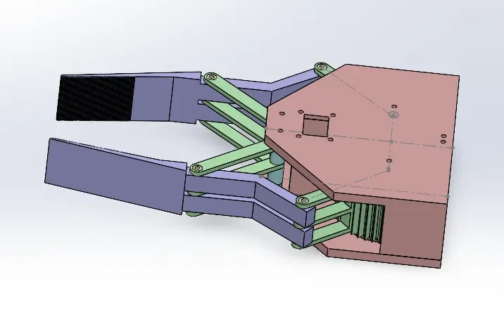
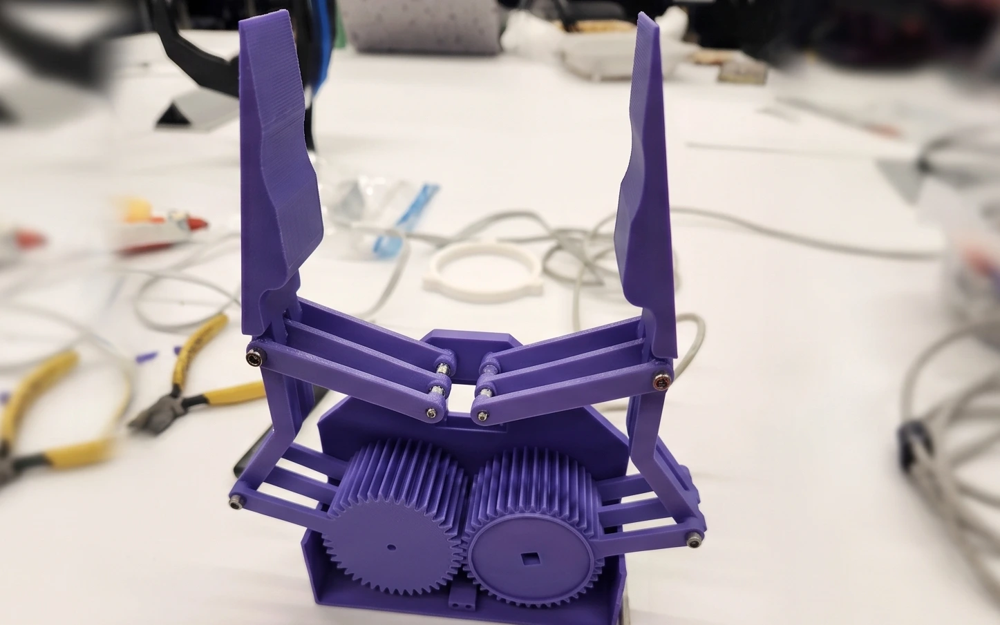
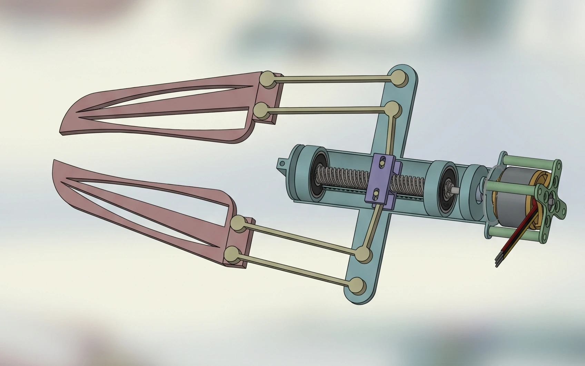

Linkage-Based Manipulators
MATE ROV Explorer Class • Subsea Gripper Assemblies



Overview & Prototyping Scope
Developed for the MATE ROV Explorer Class competition, this project focused on designing and prototyping custom end-effectors for subsea manipulation. The objective was to evaluate two distinct kinematic approaches, a synchronized gear linkage and a lead screw linear actuator, comparing part counts, mechanical viability, and actuation trade-offs prior to scaling the mechanisms to specific task requirements.
Prototype 1: Geared Linkage Gripper (Images 1 & 2)
The first prototype prioritized mechanical simplicity and rapid iteration, focusing purely on gripper kinematics rather than fixed task dimensions. Modeled as a proportional 9-part assembly (top and bottom chassis plates, dual geared drive arms, linkage bars, spacers, and locating pins), the mechanism converts rotational input into synchronized pinch motion. Driving torque was applied directly to the primary gear, which engaged the opposing gear to close both jaws simultaneously.
Prototype 2: Custom Lead-Screw Linear Gripper (Image 3)
The second iteration evaluated linear actuation to drive the jaws closed. The 12-part assembly centers on a custom chassis that guides a motor-driven lead screw, which translates a nut block forward and back to actuate L-shaped linkages. A flexible coupler links the motor shaft to the threaded rod, while integrated skateboard ball bearings and guide rails prevent side loading on the drive assembly. This iteration highlighted key engineering trade-offs, specifically mechanical friction losses and sourcing constraints for non-standard hardware.